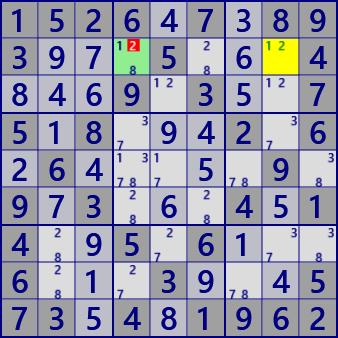

Forth
All Force-based algorithms use the current phase link. The links are used to build a chain and logically derive the truth of the cell candidates.
- A set X has one element true and the rest false. Which element is true is undetermined.
- A chain that starts with a true element determines the true/false of the elements led by the concatenation.
- In a chain starting with false element, the value of the derived element is uncertain (it can be true or false).
- For a chain that starts by assuming each element of set X to be true, if the truth value of element A that all chains lead to is the same, the truth of element A is determined.
- In a chain that starts by assuming that one element B of set X is true, the starting element B is determined to be false if multiple roots lead to unequal truth values for element C.

The (extended) link and chain structure of the Force method is relatively simple. It is also an efficient method of analysis. In other words, a good analysis algorithm for Sudoku. Forth algorithm is a logical algorithm.
Sudoku is a logical puzzle
ForceChain
ForceChain is an analysis algorithm that uses.super link
(1)ForceChain_Cell
Focused one unconfirmed cell A. Even if any of the candidate digits of cell A is assumed to be true,
when the digit#n of cell B to be linked becomes true, In B cell #n is determined to be true.
When following the link assuming that the candidate digit#a is true, some digit in the cell may lead to both true and false. This is the case of (3)ForceChain_Contradiction below, the first proposition "#a is true" is an error, Therefore, there is no link starting with "#a is true". In the GNPX implementation, this case is not included in the solution of ForceChain_Cell, but is solved by ForceChain_Contradiction.
An sample of ForceChain_Cell. Cell r6c6 becomes #2 even if the digit in cell r2c8 is #1 or #2.
The link string at this time is shown.

ForceChain_Cell
r6c6#2 is true
✿[W r2c8/+1 -> r2c4/-1] => [S r2c4/-1 -> r3c5/+1] => [W r3c5/+1 -> r5c5/-1] => [W r5c5/+7 -> r5c7/-7] => [S r5c7/-7 -> r8c7/+7] => [W r8c7/+7 -> r8c4/-7] => [W r8c4/+2 -> r6c4/-2] => [S r6c4/-2 -> r6c6/+2]
✿[W r2c8/+2 -> r2c6/-2] => [S r2c6/-2 -> r6c6/+2]
1526.7.893...5...4...9.3..75.8...2.6.6.....9.9.3...4.14..5.6...6...3...573.4.1962
ForceChain_Cell
r6c6#2 is true
r2c6#8 is true
r6c4#8 is true
ForceChain_Cell r6c6#2 is true
✿[W r2c8/+1 -> r2c4/-1] => [S r2c4/-1 -> r3c5/+1] => [W r3c5/+1 -> r5c5/-1] => [W r5c5/+7 -> r5c7/-7] => [S r5c7/-7 -> r8c7/+7] => [W r8c7/+7 -> r8c4/-7] => [W r8c4/+2 -> r6c4/-2] => [S r6c4/-2 -> r6c6/+2]
✿[W r2c8/+2 -> r2c6/-2] => [S r2c6/-2 -> r6c6/+2]
ForceChain_Cell r2c6#8 is true
✿[W r2c8/+1 -> r2c4/-1] => [S (ALS:r2468c4) r2c4/-1 -> r4c4/+3] => [W r4c4/+3 -> r4c8/-3] => [S r4c8/-3 -> r7c8/+3] => [S r7c8/-7 -> r7c5/+7] => [S r7c5/-2 -> r3c5/+2] => [W r3c5/+2 -> r2c6/-2] => [S r2c6/-2 -> r2c6/+8]
✿[W r2c8/+2 -> r3c8/-2] => [S r3c8/-2 -> r3c5/+2] => [W r3c5/+2 -> r2c6/-2] => [S r2c6/-2 -> r2c6/+8]
ForceChain_Cell r6c4#8 is true
✿[W r2c8/+1 -> r2c4/-1] => [S r2c4/-1 -> r3c5/+1] => [W r3c5/+1 -> r5c5/-1] => [W r5c5/+7 -> r5c7/-7] => [S r5c7/-7 -> r8c7/+7] => [W r8c7/+7 -> r8c4/-7] => [W r8c4/+2 -> r6c4/-2] => [S r6c4/-2 -> r6c4/+8]
✿[W r2c8/+2 -> r2c6/-2] => [S r2c6/-2 -> r6c6/+2] => [S r6c6/-8 -> r6c4/+8]
1526.7.893...5...4...9.3..75.8...2.6.6.....9.9.3...4.14..5.6...6...3...573.4.1962
(2)ForceChain_House
In one House, focused cells having a candidate digit #a.
Whichever cell #a is assumed to be true,
when the digit #n of the linked cell B becomes true, the B cell is determined to be #n true.
In ForceChain_House as well as ForceChain_Cell, when following the link assuming that the candidate digit#a is true, some digit in the cell may lead to both true and false. This is the case of (3)ForceChain_Contradiction below, the first proposition "#a is true" is an error, Therefore, there is no link starting with "#a is true". In the GNPX implementation, this case is not included in the solution of ForceChain_House, but is solved by ForceChain_Contradiction.
An sample of ForceChain_House.
Whichever cell (r2c48) with candidate digit #1 in row 2 is assumed to be true, r6c6 is confirmed as #2.
ForceChain_House(row2#1)
r6c6#2 is true
✿[W r2c4/+1 -> r2c4/-8] => [S r2c4/-8 -> r2c6/+8] => [S r2c6/-2 -> r6c6/+2]
✿[W r2c8/+1 -> r2c4/-1] => [S r2c4/-1 -> r3c5/+1] => [W r3c5/+1 -> r5c5/-1] => [W r5c5/+7 -> r5c7/-7] => [S r5c7/-7 -> r8c7/+7] => [W r8c7/+7 -> r8c4/-7] => [W r8c4/+2 -> r6c4/-2] => [S r6c4/-2 -> r6c6/+2]
1526.7.893...5...4...9.3..75.8...2.6.6.....9.9.3...4.14..5.6...6...3...573.4.1962

ForceChain_House(row2#1)
r6c6#2 is true
r2c6#8 is true
r6c4#8 is true
ForceChain_House(row2#1) r6c6#2 is true
✿[W r2c4/+1 -> r2c4/-8] => [S r2c4/-8 -> r2c6/+8] => [S r2c6/-2 -> r6c6/+2]
✿[W r2c8/+1 -> r2c4/-1] => [S r2c4/-1 -> r3c5/+1] => [W r3c5/+1 -> r5c5/-1] => [W r5c5/+7 -> r5c7/-7] => [S r5c7/-7 -> r8c7/+7] => [W r8c7/+7 -> r8c4/-7] => [W r8c4/+2 -> r6c4/-2] => [S r6c4/-2 -> r6c6/+2]
ForceChain_House(row2#1) r2c6#8 is true
✿[W r2c4/+1 -> r2c8/-1] => [W r2c8/+2 -> r2c6/-2] => [S r2c6/-2 -> r2c6/+8]
✿[W r2c8/+1 -> r2c4/-1] => [S (ALS:r2468c4) r2c4/-1 -> r4c4/+3] => [W r4c4/+3 -> r4c8/-3] => [S r4c8/-3 -> r7c8/+3] => [S r7c8/-7 -> r7c5/+7] => [S r7c5/-2 -> r3c5/+2] => [W r3c5/+2 -> r2c6/-2] => [S r2c6/-2 -> r2c6/+8]
ForceChain_House(row2#1) r6c4#8 is true
✿[W r2c4/+1 -> r2c4/-8] => [S r2c4/-8 -> r2c6/+8] => [S r2c6/-2 -> r6c6/+2] => [S r6c6/-8 -> r6c4/+8]
✿[W r2c8/+1 -> r2c4/-1] => [S r2c4/-1 -> r3c5/+1] => [W r3c5/+1 -> r5c5/-1] => [W r5c5/+7 -> r5c7/-7] => [S r5c7/-7 -> r8c7/+7] => [W r8c7/+7 -> r8c4/-7] => [W r8c4/+2 -> r6c4/-2] => [S r6c4/-2 -> r6c4/+8]
1526.7.893...5...4...9.3..75.8...2.6.6.....9.9.3...4.14..5.6...6...3...573.4.1962
(3)ForceChain_Contradiction
Assuming that a cell/digit is true, it may be possible for both the true and false to lead the digit(#n) of other cell in the superlink concatenation.
This is a contradiction, the first assumption is incorrect.

ForceChain_Contradiction
r2c4#2 is false
ForceChain_Contradiction r2c4#2 is false
✿[W r2c4/+2 -> r2c8/-2] => [S (ALS:r247c8) r2c8/-2 -> r2c8/+1]
✿[W r2c4/+2 -> r8c4/-2] => [W r8c4/+7 -> r8c7/-7] => [S r8c7/-7 -> r5c7/+7] => [W r5c7/+7 -> r5c5/-7] => [W r5c5/+1 -> r3c5/-1] => [S r3c5/-1 -> r3c8/+1] => [W r3c8/+1 -> r2c8/-1]
1526.7.893...5...4...9.3..75.8...2.6.6.....9.9.3...4.14..5.6...6...3...573.4.1962
ForceChain_Contradiction
The following cells/digits are false.
r2c4#2, r2c6#2, r2c8#1,
r3c5#1, r3c8#2,
r4c4#7, r4c8#3,
r5c4#1, r5c5#7, r5c7#7, r5c9#8,
r6c4#2, r6c6#8,
r7c2#8, r7c5#2, r7c8#7, r7c9#3,
r8c2#2 is, r8c4#7, r8c7#8
pForceChain_Contradiction r2c4#2 is false
✿[W r2c4/+2 -> r2c8/-2] => [S (ALS:r247c8) r2c8/-2 -> r2c8/+1]
✿[W r2c4/+2 -> r8c4/-2] => [W r8c4/+7 -> r8c7/-7] => [S r8c7/-7 -> r5c7/+7] => [W r5c7/+7 -> r5c5/-7] => [W r5c5/+1 -> r3c5/-1] => [S r3c5/-1 -> r3c8/+1] => [W r3c8/+1 -> r2c8/-1]
ForceChain_Contradiction r2c6#2 is false
✿[W r2c6/+2 -> r3c5/-2] => [W r3c5/+1 -> r5c5/-1] => [W r5c5/+7 -> r5c7/-7] => [S r5c7/-7 -> r8c7/+7] => [W r8c7/+7 -> r8c4/-7] => [S (ALS:r268c4) r8c4/-7 -> r2c4/+1]
✿[W r2c6/+2 -> r2c8/-2] => [S r2c8/-2 -> r3c8/+2] => [S r3c8/-1 -> r3c5/+1] => [W r3c5/+1 -> r2c4/-1]
ForceChain_Contradiction r2c8#1 is false
✿[W r2c8/+1 -> r2c4/-1] => [S r2c4/-1 -> r3c5/+1]
✿[W r2c8/+1 -> r2c4/-1] => [S (ALS:r268c4) r2c4/-1 -> r8c4/+7] => [W r8c4/+7 -> r8c7/-7] => [S r8c7/-7 -> r5c7/+7] => [W r5c7/+7 -> r5c5/-7] => [W r5c5/+1 -> r3c5/-1]
ForceChain_Contradiction r3c5#1 is false
✿[W r3c5/+1 -> r5c5/-1] => [W r5c5/+7 -> r5c7/-7] => [S r5c7/-7 -> r8c7/+7] => [W r8c7/+7 -> r8c4/-7] => [S (ALS:r268c4) r8c4/-7 -> r2c4/+1]
✿[W r3c5/+1 -> r2c4/-1]
ForceChain_Contradiction r3c8#2 is false
✿[W r3c8/+2 -> r3c5/-2] => [W r3c5/+1 -> r5c5/-1] => [W r5c5/+7 -> r5c7/-7] => [S r5c7/-7 -> r8c7/+7] => [W r8c7/+7 -> r8c4/-7] => [S (ALS:r268c4) r8c4/-7 -> r2c4/+1]
✿[W r3c8/+2 -> r2c8/-2] => [S (ALS:r247c8) r2c8/-2 -> r2c8/+1] => [W r2c8/+1 -> r2c4/-1]
ForceChain_Contradiction r4c4#7 is false
✿[W r4c4/+7 -> r8c4/-7] => [S (ALS:r268c4) r8c4/-7 -> r2c4/+1]
✿[W r4c4/+7 -> r4c8/-7] => [S r4c8/-7 -> r7c8/+7] => [W r7c8/+7 -> r7c5/-7] => [W r7c5/+2 -> r3c5/-2] => [S r3c5/-2 -> r3c8/+2] => [S r3c8/-1 -> r2c8/+1] => [W r2c8/+1 -> r2c4/-1]
ForceChain_Contradiction r4c8#3 is false
✿[W r4c8/+3 -> r4c4/-3] => [S (ALS:r2468c4) r4c4/-3 -> r2c4/+1]
✿[W r4c8/+3 -> r7c8/-3] => [W r7c8/+7 -> r7c5/-7] => [W r7c5/+2 -> r3c5/-2] => [S r3c5/-2 -> r3c8/+2] => [S r3c8/-1 -> r2c8/+1] => [W r2c8/+1 -> r2c4/-1]
ForceChain_Contradiction r5c4#1 is false
✿[W r5c4/+1 -> r5c5/-1] => [W r5c5/+7 -> r5c7/-7] => [S r5c7/-7 -> r8c7/+7] => [W r8c7/+7 -> r8c4/-7] => [S (ALS:r268c4) r8c4/-7 -> r2c4/+1]
✿[W r5c4/+1 -> r2c4/-1]
ForceChain_Contradiction r5c5#7 is false
✿[W r5c5/+7 -> r5c7/-7] => [S r5c7/-7 -> r8c7/+7] => [W r8c7/+7 -> r8c4/-7] => [S (ALS:r268c4) r8c4/-7 -> r2c4/+1]
✿[W r5c5/+7 -> r7c5/-7] => [W r7c5/+2 -> r3c5/-2] => [S r3c5/-2 -> r3c8/+2] => [S r3c8/-1 -> r2c8/+1] => [W r2c8/+1 -> r2c4/-1]
ForceChain_Contradiction r5c7#7 is false
✿[W r5c7/+7 -> r5c5/-7] => [W r5c5/+1 -> r3c5/-1] => [S r3c5/-1 -> r2c4/+1]
✿[W r5c7/+7 -> r4c8/-7] => [S r4c8/-7 -> r7c8/+7] => [W r7c8/+7 -> r7c5/-7] => [W r7c5/+2 -> r3c5/-2] => [S r3c5/-2 -> r3c8/+2] => [S r3c8/-1 -> r2c8/+1] => [W r2c8/+1 -> r2c4/-1]
ForceChain_Contradiction r5c9#8 is false
✿[W r5c9/+8 -> r5c7/-8] => [W r5c7/+7 -> r5c5/-7] => [W r5c5/+1 -> r3c5/-1] => [S r3c5/-1 -> r2c4/+1]
✿[W r5c9/+8 -> r5c7/-8] => [S r5c7/-8 -> r8c7/+8] => [W r8c7/+8 -> r7c9/-8] => [S (ALS:r7c589) r7c9/-8 -> r7c5/+2] => [W r7c5/+2 -> r3c5/-2] => [S r3c5/-2 -> r3c8/+2] => [S r3c8/-1 -> r2c8/+1] => [W r2c8/+1 -> r2c4/-1]
ForceChain_Contradiction r6c4#2 is false
✿[W r6c4/+2 -> r8c4/-2] => [W r8c4/+7 -> r8c7/-7] => [S r8c7/-7 -> r5c7/+7] => [S r5c7/-8 -> r5c9/+8] => [S r5c9/-3 -> r5c4/+3] => [S r5c4/-1 -> r2c4/+1]
✿[W r6c4/+2 -> r6c6/-2] => [S r6c6/-2 -> r2c6/+2] => [W r2c6/+2 -> r3c5/-2] => [W r3c5/+1 -> r2c4/-1]
ForceChain_Contradiction r6c6#8 is false
✿[W r6c6/+8 -> r2c6/-8] => [W r2c6/+2 -> r3c5/-2] => [W r3c5/+1 -> r5c5/-1] => [W r5c5/+7 -> r5c7/-7] => [S r5c7/-7 -> r8c7/+7] => [W r8c7/+7 -> r8c4/-7] => [S (ALS:r268c4) r8c4/-7 -> r2c4/+1]
✿[W r6c6/+8 -> r2c6/-8] => [W r2c6/+2 -> r3c5/-2] => [W r3c5/+1 -> r2c4/-1]
ForceChain_Contradiction r7c2#8 is false
✿[W r7c2/+8 -> r7c9/-8] => [S r7c9/-8 -> r5c9/+8] => [S r5c9/-3 -> r5c4/+3] => [S r5c4/-1 -> r2c4/+1]
✿[W r7c2/+8 -> r7c9/-8] => [S (ALS:r7c589) r7c9/-8 -> r7c5/+2] => [W r7c5/+2 -> r3c5/-2] => [S r3c5/-2 -> r3c8/+2] => [S r3c8/-1 -> r2c8/+1] => [W r2c8/+1 -> r2c4/-1]
ForceChain_Contradiction r7c5#2 is false
✿[W r7c5/+2 -> r7c2/-2] => [W r7c2/+8 -> r7c9/-8] => [S r7c9/-8 -> r5c9/+8] => [S r5c9/-3 -> r5c4/+3] => [S r5c4/-1 -> r2c4/+1]
✿[W r7c5/+2 -> r3c5/-2] => [S r3c5/-2 -> r3c8/+2] => [S r3c8/-1 -> r2c8/+1] => [W r2c8/+1 -> r2c4/-1]
ForceChain_Contradiction r7c8#7 is false
✿[W r7c8/+7 -> r4c8/-7] => [S r4c8/-7 -> r4c4/+7] => [S r4c4/-3 -> r5c4/+3] => [S r5c4/-1 -> r2c4/+1]
✿[W r7c8/+7 -> r7c5/-7] => [W r7c5/+2 -> r3c5/-2] => [S r3c5/-2 -> r3c8/+2] => [S r3c8/-1 -> r2c8/+1] => [W r2c8/+1 -> r2c4/-1]
ForceChain_Contradiction r7c9#3 is false
✿[W r7c9/+3 -> r5c9/-3] => [S r5c9/-3 -> r5c4/+3] => [S r5c4/-1 -> r2c4/+1]
✿[W r7c9/+3 -> r7c8/-3] => [W r7c8/+7 -> r7c5/-7] => [W r7c5/+2 -> r3c5/-2] => [S r3c5/-2 -> r3c8/+2] => [S r3c8/-1 -> r2c8/+1] => [W r2c8/+1 -> r2c4/-1]
ForceChain_Contradiction r8c2#2 is false
✿[W r8c2/+2 -> r7c2/-2] => [W r7c2/+8 -> r7c9/-8] => [S r7c9/-8 -> r5c9/+8] => [S r5c9/-3 -> r5c4/+3] => [S r5c4/-1 -> r2c4/+1]
✿[W r8c2/+2 -> r7c2/-2] => [S r7c2/-2 -> r7c5/+2] => [W r7c5/+2 -> r3c5/-2] => [S r3c5/-2 -> r3c8/+2] => [S r3c8/-1 -> r2c8/+1] => [W r2c8/+1 -> r2c4/-1]
ForceChain_Contradiction r8c4#7 is false
✿[W r8c4/+7 -> r7c5/-7] => [S (ALS:r7c259) r7c5/-7 -> r7c9/+3] => [W r7c9/+3 -> r5c9/-3] => [S r5c9/-3 -> r5c4/+3] => [S r5c4/-1 -> r2c4/+1]
✿[W r8c4/+7 -> r7c5/-7] => [W r7c5/+2 -> r3c5/-2] => [S r3c5/-2 -> r3c8/+2] => [S r3c8/-1 -> r2c8/+1] => [W r2c8/+1 -> r2c4/-1]
ForceChain_Contradiction r8c7#8 is false
✿[W r8c7/+8 -> r5c7/-8] => [S r5c7/-8 -> r5c9/+8] => [S r5c9/-3 -> r5c4/+3] => [S r5c4/-1 -> r2c4/+1]
✿[W r8c7/+8 -> r7c9/-8] => [S (ALS:r7c589) r7c9/-8 -> r7c5/+2] => [W r7c5/+2 -> r3c5/-2] => [S r3c5/-2 -> r3c8/+2] => [S r3c8/-1 -> r2c8/+1] => [W r2c8/+1 -> r2c4/-1]
1526.7.893...5...4...9.3..75.8...2.6.6.....9.9.3...4.14..5.6...6...3...573.4.1962